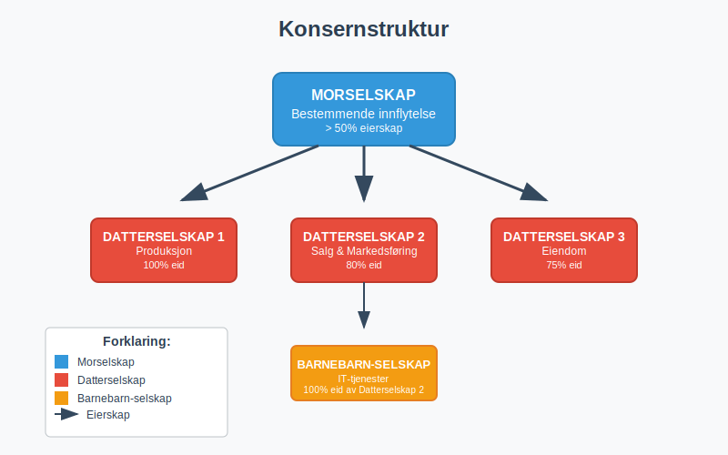
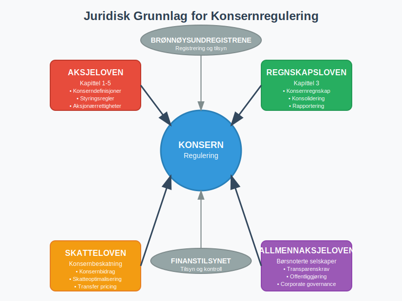
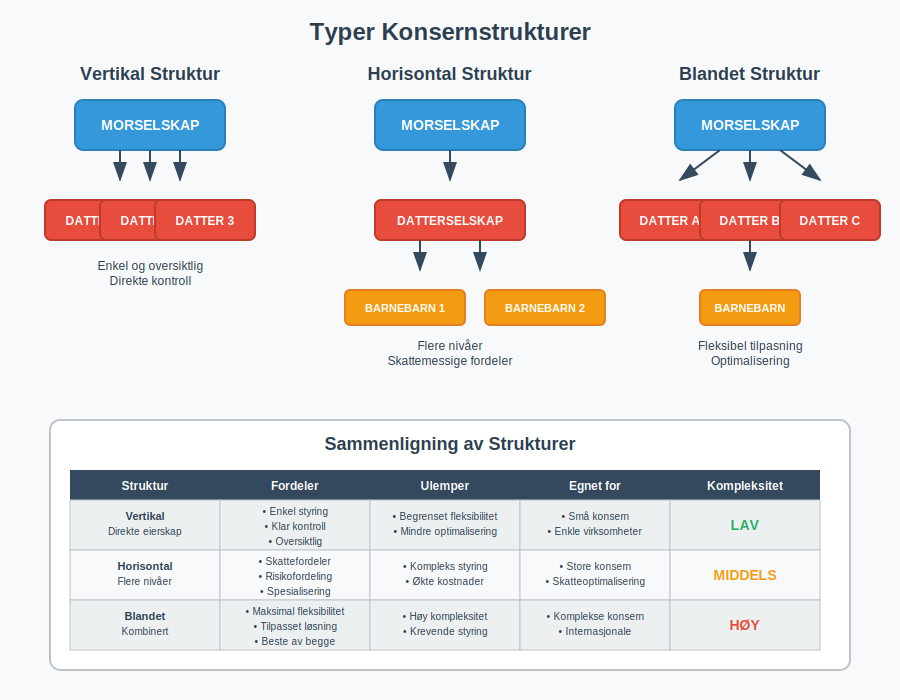
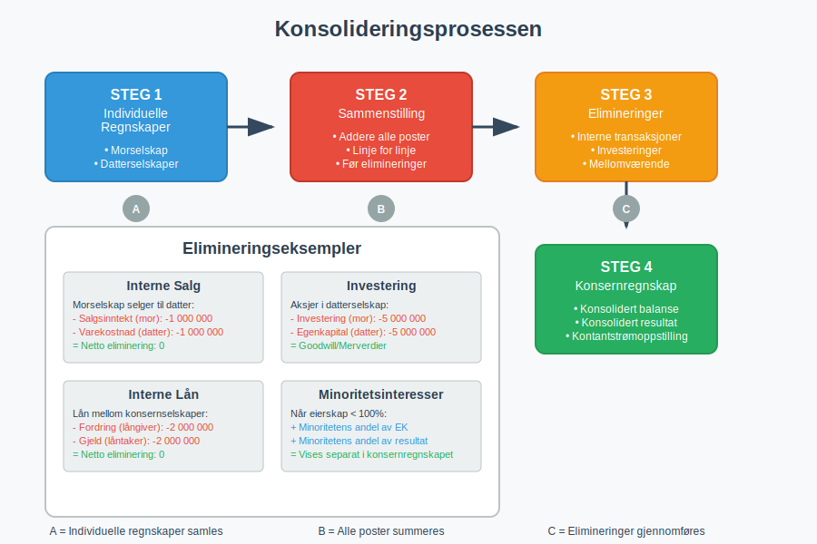
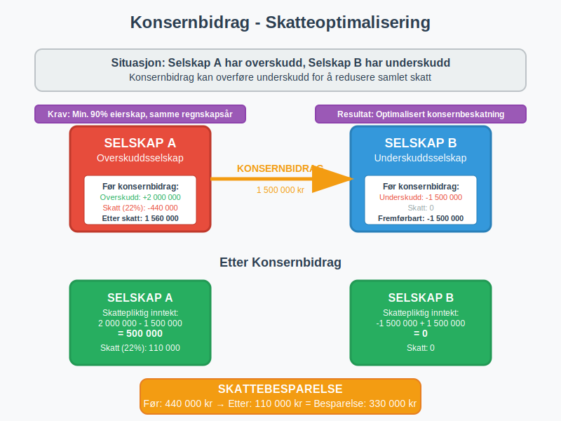
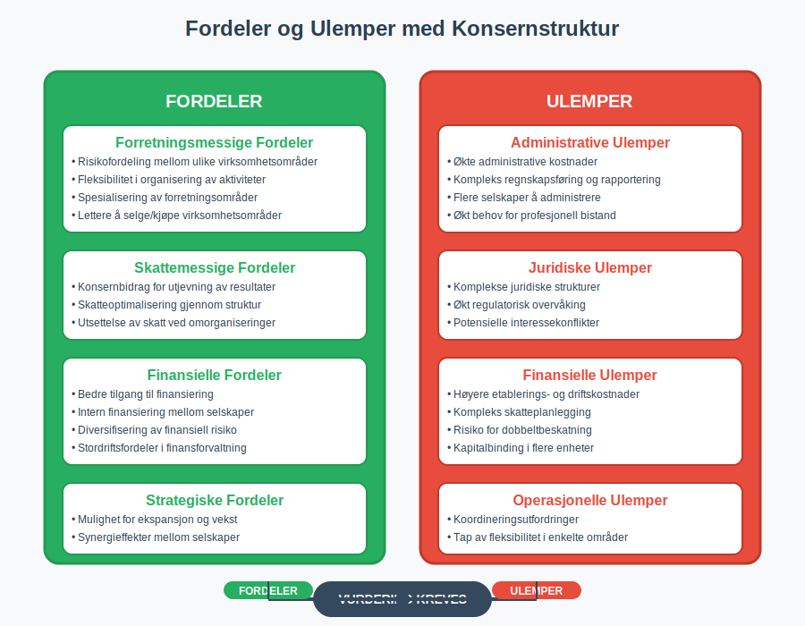
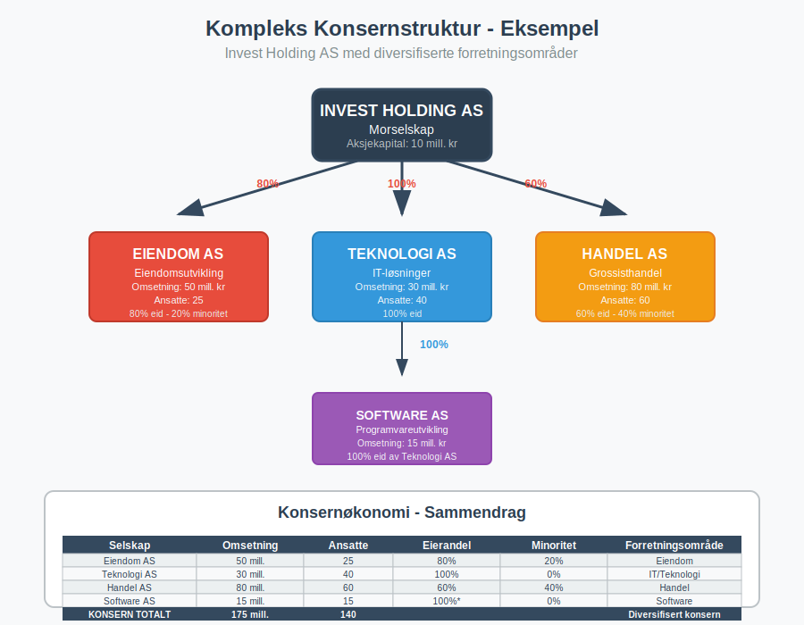
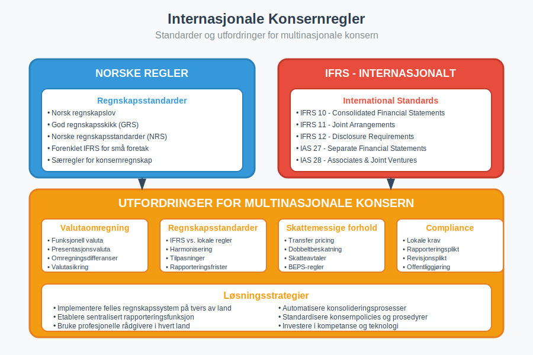

Et konsern er en gruppe av selskaper hvor ett selskap (morselskapet) har bestemmende innflytelse over ett eller flere andre selskaper (datterselskaper). Konsernstrukturer er vanlige i næringslivet og har betydelige konsekvenser for regnskap, skatt og juridiske forhold.
For spesifikke eksempler på tverrsnittsstruktur, se også Konglomerat.

Definisjon av Konsern
Et konsern oppstår når ett selskap har bestemmende innflytelse over ett eller flere andre selskaper. Bestemmende innflytelse foreligger normalt når morselskapet eier mer enn 50% av stemmene i datterselskapet.
Juridisk Grunnlag
Konsernreglene i Norge er regulert i:
- Aksjeloven kapittel 1-5 (for aksjeselskaper)
- Regnskapsloven kapittel 3 (konsernregnskap)
- Skatteloven (konsernbeskatning)
- Allmennaksjeloven (for børsnoterte selskaper)

Typer Konsernstrukturer
Vertikal Konsernstruktur
I en vertikal struktur eier morselskapet direkte alle datterselskapene:
- Morselskap på toppen
- Datterselskaper direkte underordnet
- Enkel og oversiktlig struktur
- Lett å administrere og kontrollere
Horisontal Konsernstruktur
En horisontal struktur har flere nivåer av eierskap:
- Morselskap eier datterselskap
- Datterselskap eier egne datterselskaper (barnebarn-selskaper)
- Mer kompleks struktur
- Kan gi skattemessige fordeler
Blandet Konsernstruktur
Kombinerer elementer fra både vertikal og horisontal struktur:
- Fleksibel tilpasning til forretningsbehov
- Kan optimalisere skatt og risiko
- Krever mer avansert styring

Konsernregnskap
Plikt til Konsernregnskap
Foretak må utarbeide konsernregnskap når:
- Morselskapet har bestemmende innflytelse over datterselskap
- Konsernet samlet overstiger to av følgende grenser:
- Salgsinntekt: 70 millioner kr
- Balansesum: 35 millioner kr
- Gjennomsnittlig antall ansatte: 50
Konsolideringsprinsipper
Se også vår detaljerte Konsolidering for en grundig gjennomgang.
Konsernregnskapet utarbeides ved konsolidering som innebærer:
- Sammenstilling av mor- og datterselskapenes regnskaper
- Eliminering av interne transaksjoner
- Eliminering av interne mellomværende
- Beregning av minoritetsinteresser
Elimineringer i Konsernregnskap
| Type Eliminering | Beskrivelse | Eksempel |
|---|---|---|
| Interne salg | Salg mellom konsernselskaper | Morselskap selger til datterselskap |
| Interne lån | Lån mellom konsernselskaper | Konsernkonto mellom selskaper |
| Interne gevinster | Gevinst på salg internt | Salg av anleggsmidler internt |
| Investeringer | Morselskapets investering i datterselskap | Aksjer i datterselskap |

Skattemessige Forhold
Konsernbidrag
Konsernbidrag er en skattemessig ordning som tillater:
- Overføring av underskudd mellom konsernselskaper
- Utjevning av skattepliktig inntekt
- Optimalisering av konsernets samlede skatt
Vilkår for Konsernbidrag
For å kunne gi konsernbidrag må følgende vilkår være oppfylt:
- Minimum 90% eierskap (direkte eller indirekte)
- Samme regnskapsår for begge selskaper
- Begge selskaper må være norske aksjeselskaper
- Kontinuerlig eierskap gjennom hele inntektsåret
Konsernbeskatning
Norge har ikke konsernbeskatning som mange andre land. Hvert selskap beskattes individuelt, men konsernbidragsordningen gir visse muligheter for skatteoptimalisering.

Fordeler og Ulemper med Konsernstruktur
Fordeler
Forretningsmessige Fordeler
- Risikofordeling mellom ulike virksomhetsområder
- Fleksibilitet i organisering av aktiviteter
- Spesialisering av ulike forretningsområder
- Lettere å selge eller kjøpe virksomhetsområder
Skattemessige Fordeler
- Konsernbidrag for utjevning av resultater
- Skatteoptimalisering gjennom struktur
- Utsettelse av skatt ved omorganiseringer
Finansielle Fordeler
- Bedre tilgang til finansiering
- Intern finansiering mellom selskaper
- Diversifisering av finansiell risiko
Ulemper
Administrative Ulemper
- Økte administrative kostnader
- Kompleks regnskapsføring og rapportering
- Flere selskaper å administrere
- Økt behov for profesjonell bistand
Juridiske Ulemper
- Komplekse juridiske strukturer
- Økt regulatorisk overvåking
- Potensielle interessekonflikter

Konsernledelse og Styring
Corporate Governance
God konsernledelse krever:
- Klare ansvarslinjer mellom mor- og datterselskaper
- Effektive rapporteringsrutiner
- Uavhengige styrer i datterselskaper
- Transparente beslutningsprosesser
Internkontroll i Konsern
Internkontroll i konsern må omfatte:
- Konsernvide retningslinjer og prosedyrer
- Sentral økonomistyring og rapportering
- Risikoidentifikasjon på konsernnivå
- Koordinert internrevisjon
Praktiske Eksempler
Eksempel 1: Enkel Konsernstruktur
Situasjon: Byggefirma AS eier 100% av aksjene i Transport AS
- Morselskap: Byggefirma AS (hovedvirksomhet: bygg og anlegg)
- Datterselskap: Transport AS (transporttjenester for konsernet)
- Fordel: Risikoseparasjon mellom bygg og transport
- Konsernregnskap: Må utarbeides hvis størrelseskriteriene oppfylles
Eksempel 2: Kompleks Konsernstruktur
Situasjon: Holdingselskap med flere forretningsområder
- Morselskap: Invest Holding AS
- Datterselskaper:
- Eiendom AS (80% eierskap)
- Teknologi AS (100% eierskap)
- Handel AS (60% eierskap)
- Barnebarn: Teknologi AS eier 100% av Software AS

Oppløsning av Konsern
Årsaker til Oppløsning
Konsern kan oppløses ved:
- Salg av datterselskaper
- Fusjon mellom konsernselskaper
- Fisjon (deling) av selskaper
- Avvikling av datterselskaper
Regnskapsmessige Konsekvenser
Ved oppløsning må det tas hensyn til:
- Gevinst/tap ved salg av datterselskap
- Eliminering av konserninterne poster
- Minoritetsinteresser ved delvis salg
- Skattemessige konsekvenser
Internasjonale Konsern
Utenlandske Datterselskaper
Norske konsern med utenlandske datterselskaper må håndtere:
- Valutaomregning av utenlandske regnskaper
- Ulike regnskapsstandarder (IFRS vs. norske regler)
- Skattemessige utfordringer på tvers av land
- Transfer pricing regler
IFRS for Konsernregnskap
Store konsern må ofte følge IFRS (International Financial Reporting Standards) som har egne regler for:
- Konsolidering av datterselskaper
- Tilknyttede selskaper og felleskontrollerte enheter
- Goodwill og andre immaterielle eiendeler
- Segmentrapportering

Fremtidige Utviklingstrekk
Digitalisering av Konsernrapportering
- Automatisering av konsolideringsprosesser
- Sanntids rapportering mellom konsernselskaper
- Kunstig intelligens for analyse av konserndata
- Blockchain for transparente konserntransaksjoner
Regulatoriske Endringer
- Økt fokus på bærekraftsrapportering
- Strengere krav til transparens
- Harmonisering av internasjonale regler
- Digitale rapporteringsformater
Konklusjon
Et konsern er en kompleks forretningsstruktur som kan gi betydelige fordeler, men som også krever omfattende kunnskap om regnskap, skatt og juridiske forhold. For foretak som vurderer konsernstruktur, er det viktig å:
- Vurdere forretningsmessige behov og mål
- Forstå regnskapsmessige og skattemessige konsekvenser
- Etablere gode styrings- og kontrollsystemer
- Søke profesjonell rådgivning ved etablering
Konsernstrukturer vil fortsette å være et viktig verktøy for organisering av næringsvirksomhet, men krever kontinuerlig oppmerksomhet på regulatoriske endringer og beste praksis for konsernledelse.